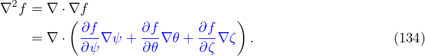
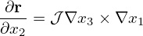
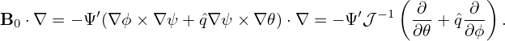
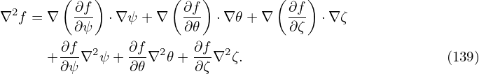
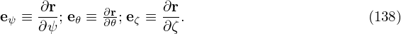

The local safety factor  is defined by
|
| (155) |
which characterizes the local pitch angle of a magnetic field line in (𝜃,ϕ) plane of a magnetic surface. Substituting the contravariant representation of the magnetic field, Eq. (153), into the above equation, the local safety factor is written
|
| (156) |
Note that the expression  in Eq. (156) depends on the Jacobian 𝒥 . This is because the definition of  depends on the definition of 𝜃, which in turn depends on the the Jacobian 𝒥 .
In terms of  , the contravariant form of the magnetic field, Eq. (153), is written
|
| (157) |
and the parallel differential operator B0 ⋅∇ is written as
|
| (158) |
If  happens to be independent of 𝜃 (i.e., field lines are straight in (𝜃,ϕ) plane), then the above operator becomes a constant coefficient differential oprator (after divided by 𝒥−1). This simplification is useful in that different poloidal harmonics are decoupled in this case. We will discuss this issue futher in Sec. 10.